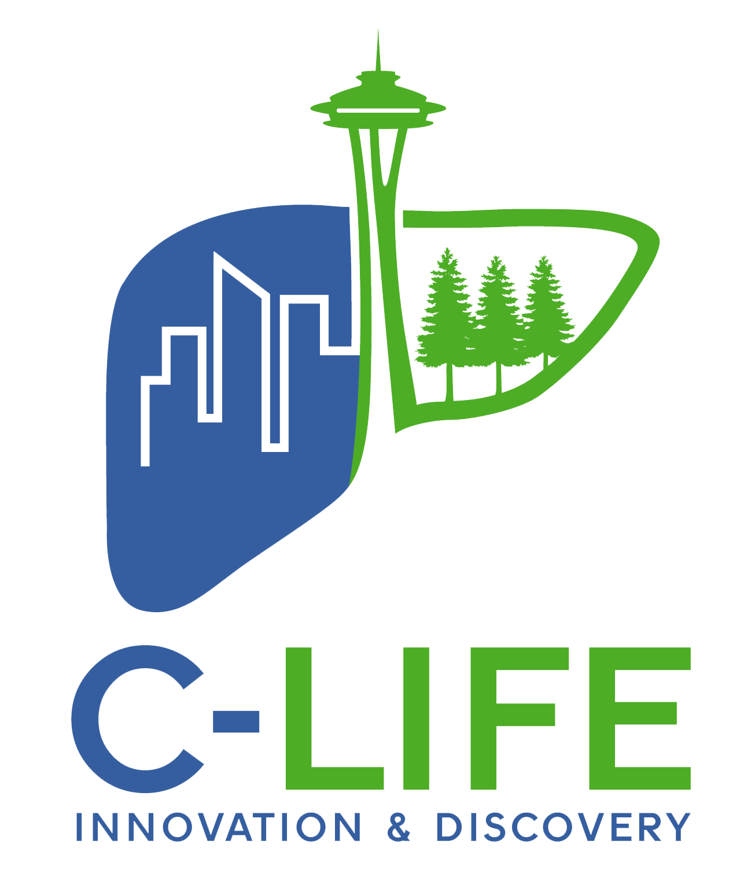

| Recurrent HCC Risk: | |||||
|---|---|---|---|---|---|
| 1 yr: | 2 yr: | 3 yr: | |||
| IML Code: | Ablate / Wait / AFP: |
Unlike current allocation policy that only uses HCC burden at one time point, the RH-IML calculator uses a summative measure of pre-liver transplant HCC burden that incorporates tumor behavior and treatment response to predict the risk of post-liver transplant recurrent HCC.
Using UNOS data from 2002-2014, 16,558 liver transplant recipients with HCC (any stage) were assessed for HCC size (total diameter), pre-liver transplant treatment and post-liver transplant recurrent HCC.
HCC was measured at 3 dates on the waitlist: (I) Initial, (M) Max, (L) Last. Tumor burden at each date was classified as:
Chi-Square tests assessed associations of IML coordinates with post-liver transplant recurrent HCC. Confounders (age, sex, race, MELD, wait-time, pre-liver transplant HCC treatment, AFP, DRI) were assessed.
Of the 64 potential combinations of IML, only 30 make clinical sense as max can not be less than initial or last. Of those 30 clinically viable combinations, 10 did not have sufficient power and 3 combinations did not occur in the available data, leaving 17 IML combinations with sufficient power to predict post-liver transplant recurrent HCC.
Dr. Biggins is a transplant hepatologist and the Chief of Hepatology at the University of Washington in Seattle, WA. Dr. Biggins and his research team from the University of Washington, University of Colorado and the University of California San Francisco developed the RH-IML calculator.
Scott W. Biggins, Philip Vutien, Jennifer L. Dodge, Kiran M. Bambha, Eric M. Nordstrom, Jane Gralla, Kristen Campbell, Clair Levek, Trevor L. Nydam, Oren K. Fix, George Ioannou
Dr. Fix is the Medical Director of the Liver Transplant Program at Swedish Medical Center in Seattle, WA and an Associate Provider Informaticist at Providence St. Joseph Health. Dr. Fix is a full-time transplant hepatologist and part-time app developer.
